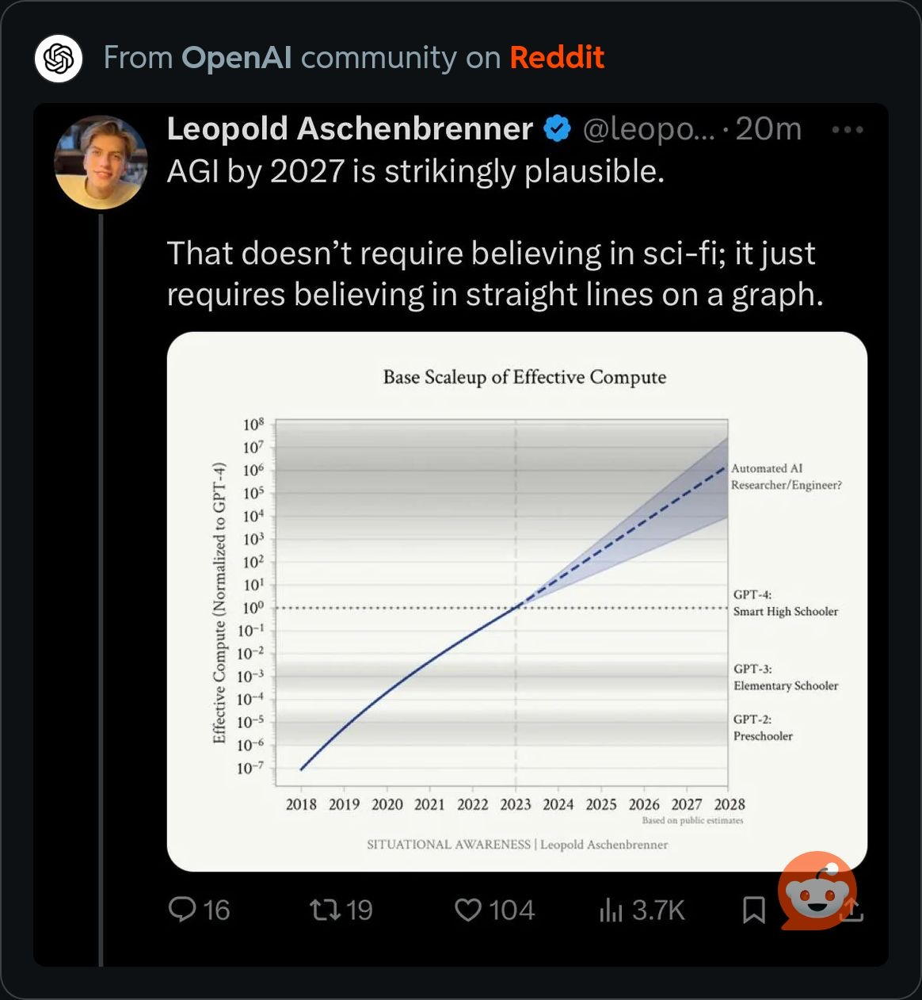

GoT#
1. Construct: f(x)
\
2. Langugage: S(t) -> 4. Modifier: y:h'(t)=0;t(X'X).X'Y -> 5. Verb: b -> 6. Object: SV'
/
3. Subject: h(t)
Metaphysical
Epistemology
Simulation
Matrix
Ontology
122720 citations for CNN as of Dec 6, 2023 vs 99204 citations for Transformers
Identity
Context
Modifier
Harmony
Time
Change
1#
Stanley Kubrick’s “Dr. Strangelove or: How I Learned to Stop Worrying and Love the Bomb” is a masterful satire that deftly intertwines absurdity, existentialism, and an eerie sense of beauty. The film’s brilliance lies in its ability to depict the madness of nuclear war through a lens of dark humor and absurdity.
The absurdity in “Dr. Strangelove” is evident from the outset, with its outlandish characters and situations that stretch the boundaries of believability while still feeling disturbingly plausible. The caricatures, like the crazed General Ripper and the bizarrely endearing Dr. Strangelove, exaggerate the irrationality of those in power. This absurdity serves to underline the surreal and often irrational nature of Cold War politics, where the fate of humanity could be dictated by a single irrational decision.
Kubrick’s exploration of existentialism is woven throughout the narrative, highlighting the precariousness of human existence in the atomic age. The film prompts viewers to confront the fragility of life and the futility of human efforts to control an inherently chaotic world. This existential dread is encapsulated in the film’s climax, where the inevitability of mutual destruction is juxtaposed with a chillingly upbeat song, “We’ll Meet Again.”
Despite the heavy themes, there’s an undeniable beauty in Kubrick’s meticulous craftsmanship. The stark black-and-white cinematography, the iconic war room set, and the precise framing of each shot all contribute to a visual elegance that contrasts sharply with the film’s chaotic subject matter. This aesthetic beauty underscores the film’s thematic contrasts, making the absurdity and existential dread even more striking.
In “Dr. Strangelove,” Kubrick doesn’t just critique the insanity of nuclear warfare; he also presents it in such a way that viewers are forced to laugh at the absurdity of it all, even as they contemplate the very real existential threats. It’s a film that manages to be simultaneously hilarious, terrifying, and visually stunning, cementing its place as a timeless classic in the canon of cinema.
2#
The idea that “women think men are responsible for all ills” is a broad generalization that doesn’t hold up under scrutiny. In reality, perspectives on responsibility and blame are diverse and multifaceted, varying significantly among individuals regardless of gender. However, it’s true that historically, men have predominantly occupied positions of power, particularly in the context of warfare and geopolitical decisions, which might contribute to the perception that men are more responsible for these issues.
In “Dr. Strangelove,” the absence of significant female characters is notable and reflects the gender dynamics of its time. The film’s focus on male military and political figures underscores the reality that, during the Cold War era, men were overwhelmingly the ones making decisions about war and peace. This isn’t to say that women are inherently incapable of such roles; rather, it highlights the historical exclusion of women from these positions of power.
The broader claim that no single woman has been responsible for any war in human history is inaccurate. While it’s true that men have predominantly been the architects of war, there have been notable female leaders who have led their nations into conflict, such as Cleopatra of Egypt and Queen Victoria of Britain during various imperial campaigns. However, these instances are exceptions rather than the rule.
The critical takeaway is that the dynamics of power and responsibility in human history are complex. They cannot be neatly divided along gender lines. In contemporary times, the push for gender equality aims to ensure that women have equal opportunities to participate in all spheres of life, including politics and military leadership, which could lead to a more balanced and potentially less conflict-driven world.
Kubrick’s “Dr. Strangelove” might be seen as a product of its time, reflecting the male-dominated power structures of the mid-20th century. In modern discourse, it’s crucial to recognize the contributions and capabilities of all genders while working towards a more inclusive and equitable society.
3#
